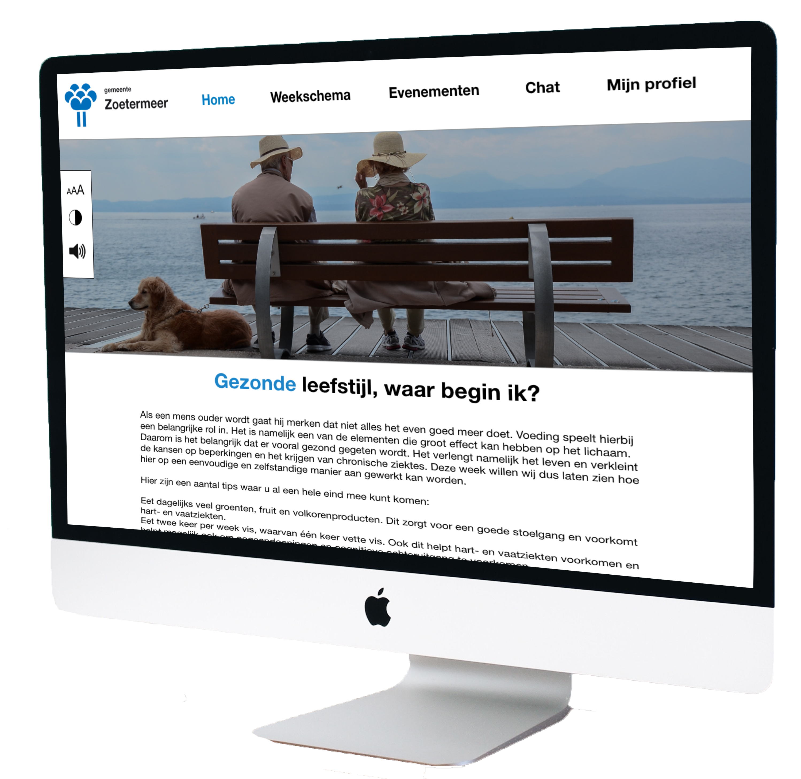
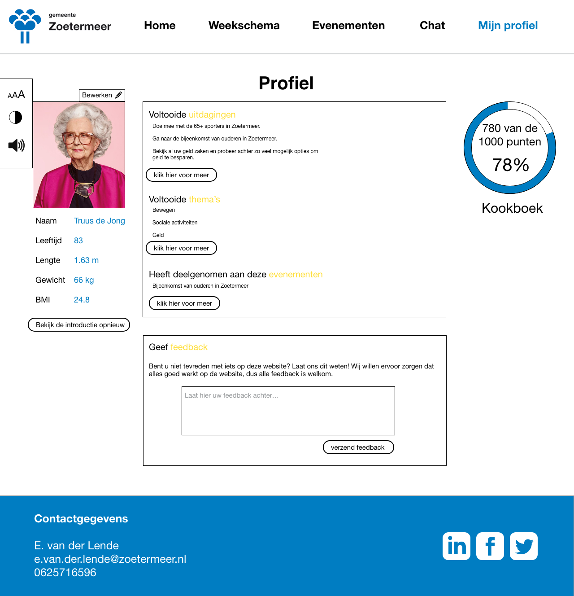
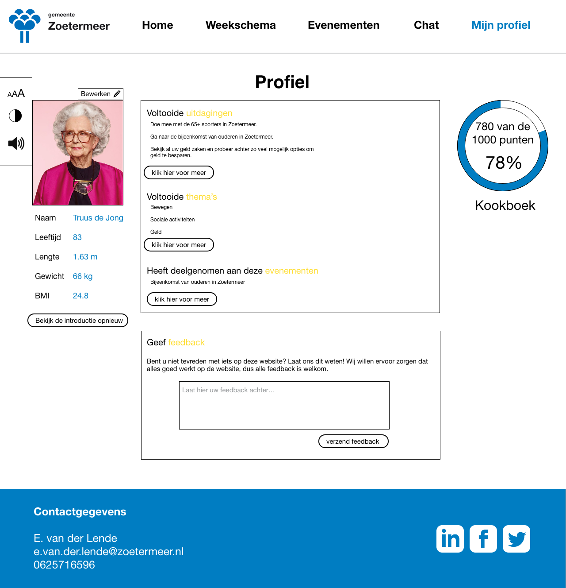

Dit project is gemaakt naar aanleiding van het vak ‘Usable design’ voor de gemeente Zoetermeer. De opdracht is om de ouderen op een leuke manier te informeren over hun vitaliteit. Op deze manier zullen ouders in staat zijn om voor zichzelf te zorgen en zo ook langer thuis kunnen wonen in plaats van in een verzorgingstehuis.

Probleemstelling
Voor ouderen is vitaliteit belangrijk: ze willen gezond zijn en blijven, sociaal betrokken zijn en actief deel blijven uitmaken van de maatschappij. Ook willen ze zelfstandig kunnen wonen zonder hulp van anderen nodig te hebben.
Maar dit is niet gemakkelijk. Het probleem hier is dat ze niet genoeg informatie hebben over vitaliteit om gezond te kunnen leven en voor zichzelf te kunnen zorgen. Dit brengt hun gezondheid in gevaar. Ook komen ze minder in contact met andere mensen en doen minder mee aan sociale activiteiten. Ze worden eenzaam en/of depressief en komen terecht in een verzorgingstehuis. Dit is dan ook precies wat de gemeente wilt voorkomen. Ouderen moeten begrijpen wat er met hun gebeurt en hoe ze met fysieke en mentale problemen om moeten gaan. Op deze manier zullen ze instaat zijn om langer in hun eigen huis te wonen, zonder dat het gevaarlijk voor hun is.
Doelstelling
Het doel hier is om een digitale applicatie te maken voor de ouderen in Zoetermeer die hun informatie geeft over hoe ze vital kunnen worden en blijven. Dit moet op een leuke en uitnodigde manier gedaan worden om de ouderen te motiveren om een gezonder leefstijl te beginnen. Ook moet het ervoor zorgen dat ze meer in contact komen met mensen die net als hun vitaler willen leven.
User needs
Er werden eerst verschillende mensen geïnterviewd, die allemaal 65 jaar of ouder waren, om erachter te komen wat hun behoeftes zijn en welk applicatie het meest positieve effect zou hebben. De resultaten van deze interviews waren:
Ze willen meer in contact zijn met leeftijdsgenoten.
Makkelijk informatie vinden over de activiteiten in hun omgeving en welk ondersteuning de gemeente en andere organisaties hun aanbieden.
Delen van informatie over de activiteiten waaraan ze deelnemen of nog gaan deelnemen.
Minder betalen voor ziektekosten.
Dit zijn de user needs die aan de applicatie toegepast zullen worden. Een ander resultaat die tijdens de interview naar voren is gekomen was dat de meeste ouderen het liefst gebruik maken van computers.
Product
Met de user needs en de informatie die verkregen is uit de interviews en het onderzoek is deze website gemaakt. Deze website bevat een weekkalender met verschillende thema’s die samen zijn gesteld om ervoor te zorgen dat de doelgroep vitaler en socialer wordt. Er is elke maand ook een uitje of bijeenkomst die bij de thema van de week past. Hierbij kunnen de deelnemers meer sociale contacten ontwikkelen en onderhouden.
De kalender bestaat uit opdrachten die op een speelse manier de ouderen helpen om hun vitaliteit te verbeteren. Aan het einde van elke week is er een challenge. Deze challenge is groter dan de opdrachten die doordeweeks gedaan worden. Dit zorgt ervoor dat de doelgroep nog meer wordt uitgedaagd. Bij het doen van deze opdrachten verdient de gebruiker punten. Bij een bepaald hoeveelheid punten krijgen ze een deel van een gezond pakket. Dit gaat zo door tot ze de hele pakket binnen hebben.

 
